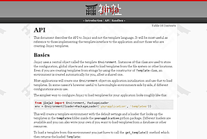

HTML 主题化¶
Sphinx 为 HTML 和基于 HTML 的格式提供了许多构建器。
构建器¶
待处理
当 “构建器” 文档被拆分时进行填充。
主题¶
0.6 新版功能.
备注
本节提供关于使用预先存在的 HTML 主题的信息。如果你想创建你自己的主题，请参考 HTML 主题开发。
Sphinx 支持通过 themes 改变其 HTML 输出的外观。主题是 HTML 模板、样式表和其他静态文件的集合。此外，它有配置文件，指定从哪个主题继承，使用哪种高亮的风格，以及有哪些选项可以定制主题的外观和感觉。
主题是为了不受项目影响，所以它们可以用于不同的项目而不需要改变。
使用主题¶
使用 Sphinx 提供的 很容易。因为这些不需要安装，你只需要设置 html_theme 配置值。例如，要启用 classic 主题，请在 conf.py 中添加以下内容
html_theme = "classic"
你也可以使用 html_theme_options 配置值来设置特定主题的选项。这些选项通常用于改变主题的外观和感觉。例如，要把侧边栏放在右边，关系栏（页面顶部和底部的导航链接栏）用黑色背景，请添加如下 conf.py:
html_theme_options = {
"rightsidebar": "true",
"relbarbgcolor": "black"
}
如果主题没有被 Sphinx 附带，它可以以两种静态形式或 Python 包的形式出现。对于静态形式，可以是目录（包含 theme.conf 和其他需要的文件），也可以是具有相同内容的 zip 文件。这个目录或 zip 文件必须放在 Sphinx 能找到的地方；为此有配置值 html_theme_path。这可以是目录列表，相对于包含 conf.py 的目录，它可以包含主题目录或 zip 文件。例如，如果你有主题文件 blue.zip，你可以把它直接放在包含 conf.py 的目录中，并使用这个配置
html_theme = "blue"
html_theme_path = ["."]
第三种形式是 Python 包。如果你想使用的主题是作为 Python 包分发的，你可以在安装后使用它
# installing theme package
$ pip install sphinxjp.themes.dotted
一旦安装，就可以用与目录或基于 zip 文件的主题相同的方式使用
html_theme = "dotted"
关于主题设计的更多信息，包括关于编写你自己的主题的信息，请参考 HTML 主题开发。
内置主题¶
主题概览 |
|
alabaster |
classic |
sphinxdoc |
 scrolls |
agogo |
traditional |
nature |
haiku |
pyramid |
bizstyle |


Sphinx 有一系列的主题可供选择。
请注意，在这些主题中，只有 Alabaster 和 Scrolls 主题是针对移动设备进行优化的，如果屏幕太窄，其他主题就会采用水平滚动。
这些主题是：
- basic
这是一个基本的无样式的布局，用作其他主题的基础，也可以作为自定义主题的基础。HTML 包含了所有重要的元素，如侧边栏和关系栏。这里有一些选项（这些选项是由其他主题所继承的）：
nosidebar （true 或 false）：不包括侧边栏。默认为
False。sidebarwidth （int 或 str）：侧边栏的宽度（以像素为单位）。这可以是 int，它被解释为像素或有效的 CSS 维度字符串，如 ‘70em’ 或 ‘50%’。默认为 230 像素。
body_min_width （int 或 str）：document body 的最小宽度。这可以是 int，它被解释为像素或有效的 CSS 维度字符串，如 ‘70em’ 或 ‘50%’。如果你不想限制宽度，就使用 0。默认值可能取决于主题（通常是 450px）。
body_max_width （int 或 str）：文档主体的最大宽度。这可以是 int，它被解释为像素或有效的 CSS 维度字符串，如 ‘70em’ 或 ‘50%’。如果不需要宽度限制，请使用 ‘none’。默认值可能取决于主题（通常是 800px）。
navigation_with_keys （true 或 false）：允许使用以下键盘快捷键导航：
Left arrow：上一页
Right arrow：下一页
默认
False。enable_search_shortcuts （true 或 false）：允许跳转到搜索框 /，并允许移除搜索高亮显示 Esc。
默认
True。globaltoc_collapse （true 或 false）：只在
globaltoc.html中展开当前文档的子部分（参见html_sidebars）。默认True。3.1 新版功能.
globaltoc_includehidden （true 或 false）：显示在
globaltoc.html（见html_sidebars）中的那些已经包含在toctree指令的:hidden:标志中的子部分。默认为False。3.1 新版功能.
globaltoc_maxdepth （int）： toctree 在
globaltoc.html中的最大深度（参见html_sidebars）。将其设置为 -1 以允许无限深度。默认值为 toctree 指令中选择的最大深度。3.2 新版功能.
- alabaster
Alabaster theme 是来自 @kennethreitz（特别是在他的请求项目中使用）的修改 “Kr” Sphinx 主题，这本身是基于 @mitsuhiko 用于 Flask 和相关项目的主题。关于如何配置
html_sidebars，请参考它的 installation page。- classic
这是经典的主题，看起来像 Python 2 文档。它可以通过以下选项进行定制：
rightsidebar （true 或 false）：把侧边栏放在右边。默认为
False。stickysidebar （true 或 false）：使侧边栏“固定”，这样它不会滚动出视图长的正文内容。这可能不适用于所有浏览器。默认为
False。可折叠的侧边栏 （true 或 false）：添加 实验性的 JavaScript 代码片段，使侧边栏可以通过按钮折叠。默认为
False。externalrefs (true 或 false)：显示外部链接与内部链接不同。默认为
False。
也有各种颜色和字体选项，可以改变配色方案，而不必编写自定义样式表：
footerbgcolor (CSS 颜色)：页脚线的背景颜色。
footertextcolor (CSS 颜色)：页脚的文本颜色。
sidebarbgcolor (CSS 颜色)：侧边栏的背景颜色。
sidebarbtncolor (CSS 颜色): 侧边栏折叠按钮的背景颜色（当 collapsiblesidebar 为
True时使用）。sidebartextcolor （CSS 颜色）：侧边栏的文本颜色。
sidebarlinkcolor (CSS 颜色)：侧边栏的链接颜色。
relbarbgcolor (CSS 颜色)：关系栏的背景颜色。
relbartextcolor (CSS 颜色)：关系栏的文本颜色。
relbarlinkcolor (CSS 颜色)：关系栏的链接颜色。
bgcolor (CSS 颜色)：Body 背景颜色。
textcolor (CSS 颜色)：Body 文本颜色。
linkcolor (CSS 颜色)：Body 链接颜色。
visitedlinkcolor (CSS 颜色)：Body 已访问链接颜色。
headbgcolor (CSS 颜色)：heading 背景颜色。
headtextcolor (CSS 颜色)：heading 文本颜色。
headlinkcolor (CSS 颜色)：heading 链接颜色。
codebgcolor (CSS color): Background color for code blocks.
codetextcolor (CSS color): Default text color for code blocks, if not set differently by the highlighting style.
bodyfont (CSS font-family): Font for normal text.
headfont (CSS font-family): Font for headings.
- sphinxdoc
本文档最初使用的主题。它在右侧有一个侧边栏。目前除了 nosidebar 和 sidebarwidth 没有其他选项。
备注
Sphinx 文档现在使用 sphinxdoc 主题的调整版本。
- scrolls
更轻量级的主题，基于 Jinja 文档。以下颜色可供选择：
headerbordercolor
subheadlinecolor
linkcolor
visitedlinkcolor
admonitioncolor
- agogo
A theme created by Andi Albrecht. The following options are supported:
bodyfont (CSS font family): Font for normal text.
headerfont (CSS font family): Font for headings.
pagewidth (CSS length): Width of the page content, default 70em.
documentwidth (CSS length): Width of the document (without sidebar), default 50em.
sidebarwidth (CSS length): Width of the sidebar, default 20em.
rightsidebar (true or false): Put the sidebar on the right side. Defaults to
True.bgcolor (CSS color): Background color.
headerbg (CSS value for “background”): background for the header area, default a grayish gradient.
footerbg (CSS value for “background”): background for the footer area, default a light gray gradient.
linkcolor (CSS 颜色)：Body 链接颜色。
headercolor1, headercolor2 (CSS color): colors for <h1> and <h2> headings.
headerlinkcolor (CSS color): Color for the backreference link in headings.
textalign (CSS text-align value): Text alignment for the body, default is
justify.
- nature
A greenish theme. There are currently no options beyond nosidebar and sidebarwidth.
- pyramid
A theme from the Pyramid web framework project, designed by Blaise Laflamme. There are currently no options beyond nosidebar and sidebarwidth.
- haiku
A theme without sidebar inspired by the Haiku OS user guide. The following options are supported:
full_logo (true or false, default
False): If this is true, the header will only show thehtml_logo. Use this for large logos. If this is false, the logo (if present) will be shown floating right, and the documentation title will be put in the header.textcolor, headingcolor, linkcolor, visitedlinkcolor, hoverlinkcolor (CSS colors): Colors for various body elements.
- traditional
A theme resembling the old Python documentation. There are currently no options beyond nosidebar and sidebarwidth.
- epub
A theme for the epub builder. This theme tries to save visual space which is a sparse resource on ebook readers. The following options are supported:
relbar1 (true or false, default
True): If this is true, the relbar1 block is inserted in the epub output, otherwise it is omitted.footer (true or false, default
True): If this is true, the footer block is inserted in the epub output, otherwise it is omitted.
- bizstyle
A simple bluish theme. The following options are supported beyond nosidebar and sidebarwidth:
rightsidebar （true 或 false）：把侧边栏放在右边。默认为
False。
1.3 新版功能: ‘alabaster’, ‘sphinx_rtd_theme’ and ‘bizstyle’ theme.
在 1.3 版更改: The ‘default’ theme has been renamed to ‘classic’. ‘default’ is still available, however it will emit a notice that it is an alias for the new ‘alabaster’ theme.
三方主题¶
有许多第三方主题可用于 Sphinx。其中一些是通用的，而另一些是针对个别项目的。
sphinx-themes.org 是一个画廊，展示了 Sphinx 的各种主题，每个主题下都有演示文档呈现。主题也可以在 PyPI （使用分类器 Framework :: Sphinx :: Theme）、GitHub 和 GitLab 找到。